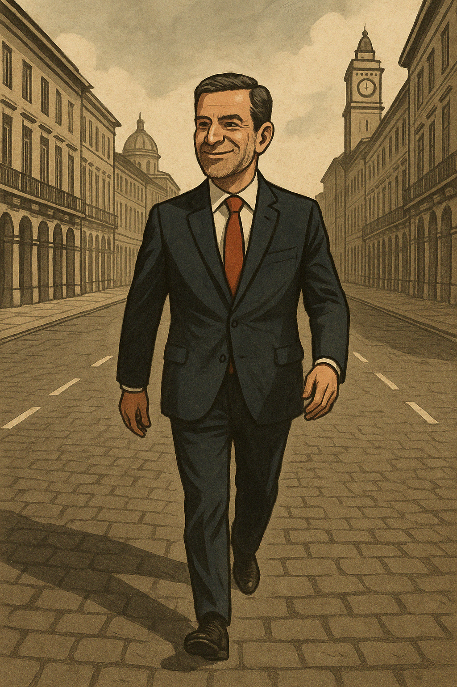

Publicado em 2025-04-20 10:05:11
Luís Montenegro continua a governar como quem passeia num domingo de sol. Discursa, posa para a fotografia, caminha de peito feito por avenidas e praças como se nada de grave se passasse no país. É uma liderança de encenação, onde a imagem importa mais do que a substância, e onde os problemas reais dos portugueses parecem ficar sempre para segundo plano.
O país continua atolado em dificuldades crónicas: os jovens emigrados ou desesperançados, a habitação inacessível, os salários indignos, os serviços públicos degradados, os idosos ao abandono, a justiça lenta, a corrupção difusa e a economia estagnada. Mas para o Primeiro-Ministro, tudo parece reduzido a uma coreografia institucional, com falas decoradas e passos calculados.
Montenegro não herdou o poder de um golpe nem de um milagre. Chegou lá pelo cansaço dos outros. Mas está a provar que mudar de cara não chega. O sistema continua intocável, as estruturas mantêm-se, os interesses são os mesmos. E enquanto ele desfila, a população afunda-se num quotidiano cada vez mais áspero.
Não se vê uma reforma estrutural, uma coragem rupturista, um gesto simbólico que devolva à política alguma dignidade. Apenas mais do mesmo, agora com um novo apresentador. É o país do marketing político, onde a presença em eventos substitui a ação concreta.
Luís Montenegro desfila. Mas o povo espera. Espera por coragem, por visão, por mudança verdadeira. E enquanto isso não acontece, Portugal estagna, desaponta e afunda-se na sua eterna promiscuidade entre promessas e desilusão.
Governar é mais do que aparecer. É ter espinha, propósito e capacidade de romper com o que está podre. Até lá, teremos um Primeiro-Ministro que desfila. Mas um país que não sai do lugar.
Francisco Gonçalves
Créditos para ChatGPT e OpenAI (c)